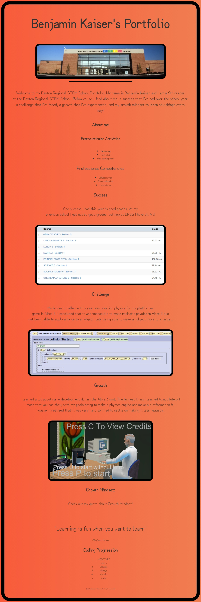
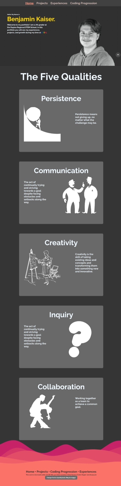

The project I am showing growth in is the portfolio project. The professional competency I am going to address my growth is persistence. The most challenging part of this project was positioning elements because often if would not position itself where I wanted it to go. I resolved this challenge by persisting and trying different methods. This made a difference because the layout now looks professional and creative. I can now correctly position elements within a webpage because I learned that if you try hard enough, then you will eventually succeed. The feedback that helped me the most was Millan Naik’s. After discussing with him, I decided that it was better to have the 5 qualities in a single column, instead of having the in two columns, side by side.
6th grade portfolio with no positioning
7th grade portfolio with positioning
